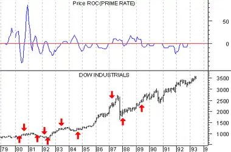

Interest rates play a key role in the general business cycle and the financial markets. When interest rates change, or interest rate expectations change, the effects are far-reaching. When rates rise, consumers spend less which causes retail sales to slow, which leads to reduced corporate profits, a declining stock market, and higher unemployment.
The effect of declining corporate profits on the stock market is compounded by the fact that higher interest rates make interest-bearing investments more attractive, causing an exodus of money from the stock market.
Historically, an increase in interest rates is bearish for the stock market, whereas a decrease is bullish.
The following chart shows the 4-month rate-of-change of the Prime Rate and the Dow Industrials. I drew "buy" arrows when interest rates were falling (the indicator was below zero) and "sell" arrows when rates were rising. The arrows show the strong correlation between interest rates and the stock market.
 Corporate Bond RatesJust as governments issue bonds to fund their activities, so do corporations. Corporate bonds are considered riskier than Treasury Bonds and compensate for their higher risk with higher yields. The yield of a specific corporate bond depends on numerous factors, the most important is the financial health of the corporation and prevailing interest rates. Several bond rating services provide investors with an evaluation to help judge the bond's quality.
The Confidence Index, developed by Barron's in 1932, uses corporate bond yields as one of its components. The Confidence Index attempts to measure the "confidence" that investors have in the economy by comparing high grade bond yields to speculative grade bond yields.If investors are optimistic about the economy, they are more likely to invest in speculative bonds, thereby driving speculative bond yields down, and the Confidence Index up. On the other hand, if they are pessimistic about the economy, they are more likely to move their money from speculative grade bonds to conservative high-grade bonds, thereby driving high-grade bond yields down and the Confidence Index down.
Discount RateThe Discount Rate is the interest rate that the Federal Reserve charges member banks for loans. Banks use the Discount Rate as the base for loans made to their customers. The Discount Rate is set by the Federal Reserve Board which consists of seven members appointed by the President of the United States.
The Discount Rate does not fluctuate on a day-to-day basis like most other interest rates. Instead, it only changes when the Federal Reserve Board feels it is necessary to influence the economy. During recessionary times, the Fed will ease interest rates to promote borrowing and spending. During inflationary times, the Fed will raise interest rates to discourage borrowing and spending, thereby slowing the rise in prices.
Federal FundsBanks with excess reserves can lend their reserves to banks with deficient reserves at the Federal Funds Market. The interest rate charged for these short (often just overnight) loans is called the Fed Funds Rate.
Prime Rate The Prime Rate is the interest rate U.S. banks charge their best corporate clients. Changes in the Prime Rate are almost always on the heels of a change in the Discount Rate. Treasury Bond RatesAn extremely important interest rate is the yield on 30-year Treasury Bonds ("long bonds"). The U.S. Treasury Department auctions these bonds every six months.
Long bonds are the most volatile of all government bonds, because of the length of their maturities--a small change in interest rates causes an amplified change in the underlying bonds' price.
Treasury Bill RatesTreasury Bills are short-term (13- and 26-week) money market instruments. They are auctioned by the U.S. Treasury Department weekly and are often used as a secure place to earn current market rates.